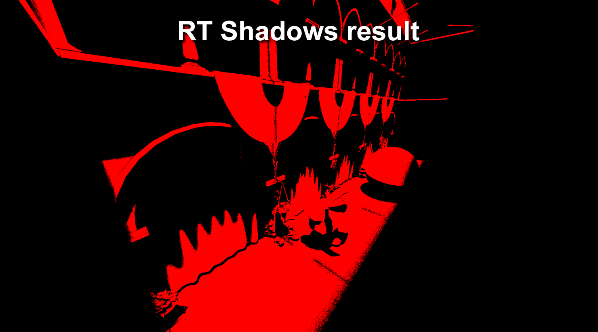
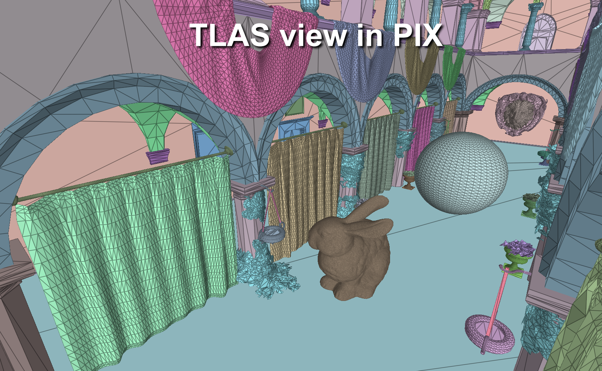
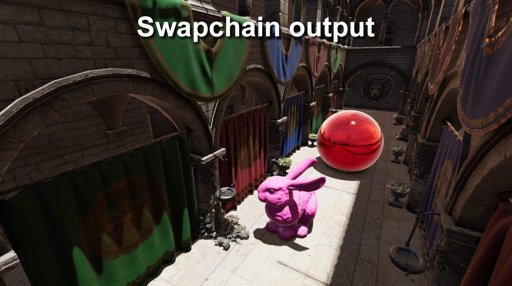
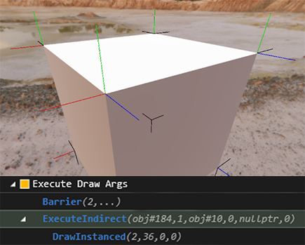
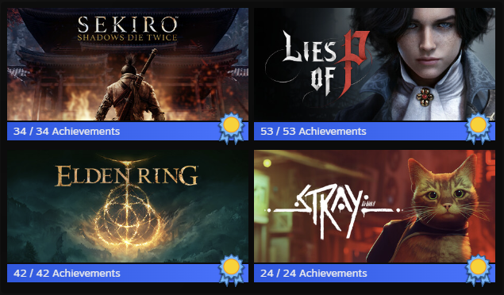

with more titles yet to be announced
(including NDA Console APIs)
Toolbox
03GPU Debugging
- PIX
- NVIDIA Nsight
- RenderDoc
- All 9th generation console graphics debuggers
- NVIDIA ICAT
- GPU crash investigation (Nvidia Nsight, AMD RGD, DRED...)
Profiling
- Superluminal
- Very Sleepy (CPU profiler)
- NVIDIA Nsight GPU traces
- AMD Radeon GPU Profiler (RGP)
- All 9th generation console profiling tool suite
Toolchain
- Git / Perforce / SVN
- Sharpmake / Premake
- TeamCity CI/CD
- Visual Studio
- VS Code
Graphics
- HLSL
- Physically based rendering
- Bindless rendering
- GPU-driven rendering
- Colour management & OCIO
- Async compute
- AMD vs NVIDIA discrepancies
Eggshell Engine
04 / PERSONAL PROJECTEggshell is my personal graphics engine and technical playground. It's a private project built to explore modern rendering techniques, graphics APIs and the problems involved in maintaining a renderer across multiple platforms.

Built for experimentation.
D3D12 is the primary development target, with Metal and Vulkan implementations following behind. The purpose is to have somewhere I can investigate graphics techniques from the ground up aswell as serve as a point of reference.
D3D12 / Vulkan / Metal Windows / Linux / macOS

Rendering
-
Physically Based Renderer
- Image Based Lighting
- Clear coat & clear coat normals - Fully bindless rendering
-
Inline Raytracing
- Raytraced ambient occlusion
- Raytraced shadows - GPU-driven debug line rendering
-
Async compute
- Under development for BVH building
Toolchain
-
Custom Universal Shader Compiler
- HLSL written once and compiled across APIs -
TeamCity build integration
- Windows & Linux build agents -
Sharpmake project generation
- Visual Studio 2022 for Windows 11
- MakeFiles for Linux
- XCode for MacOS
Gfx APIs
-
D3D12
- Utilizing AgilitySDK -
Vulkan 1.4
- W.I.P -
Metal 3
- Metal 4 upgrade W.I.P
Platforms
- Windows 11
- Linux
-
MacOS
- M-series Apple silicone -
Steam Deck
- Via Valve's Proton emulation layer
What's next?
Upcomming
- Completing the W.I.P on multi-draw indirect
- Rendering the scene into the IBL probes and not just the HDRI environment map
-
Denoising Raytraced results
- Investigate custom Spatiotemportal Variance-Guided Filtering (SVGF) -
Directed Acyclic Graph (DAG) frame graph
- Will drive the async compute implementation
One API call.
Thousands of lines.
05 / GPU DEBUGGING

GPU-driven debug rendering.
One of my favourite little systems in Eggshell is GPU-driven debug line rendering. Any shader can allocate a debug line. At the end of rendering, a single ExecuteIndirect call instances the resulting geometry.
This means thousands of lines can be generated throughout the frame with very little CPU involement.
// Allocate a debug line for each vertex normal
GPUDebugLine debugLine;
debugLine.Start = WorldPos.xyz;
debugLine.End = WorldPos.xyz + (Normal.xyz * 0.2f);
debugLine.Colour = output.Normal.xyz;
AllocateDebugLine( u_GPUDebugLines, debugLine );
The beauty of lines is, like triangles being the smallest primitive used for rendering, you can make anything from lines.
As a result the system is designed to be easily expandable to add features like:
AllocateDebugSquare( ); // Internally just calls AllocateDebugLine() 4 times
AllocateDebugCube( )
AllocateDebugCameraFrustrum( )
Outside
the GPU
06 / PERSONAL

Favourite game genre: Soulslike
I'm a huge fan of Soulslike games, with Sekiro: Shadows Die Twice being my favourite.
Lies of P is a close second. Its atmosphere and setting is particularly hard to beat in that department.
And then there's Destiny 2, where I've accumulated over 2,100 hours and completed 8 of the game's dungeons solo-flawless.
Im also a big cat lover so thats why Stray is there.